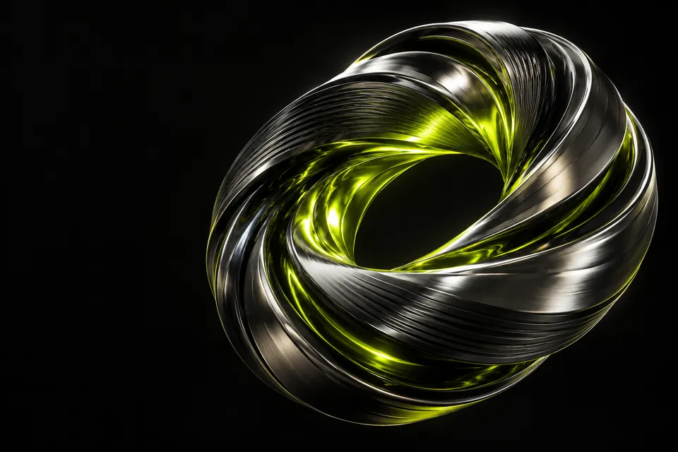

House
124 BPMWarm bass. Soulful edges. Endless movement.
✳ ELECTRONIC MUSIC. HUMAN CONNECTION.
For the heads-down moments.
The hands-up nights. And everything in between.
Original preview mixes. One tap takes you in.

SOUND HAS A SHAPE.The EDM Audio Sessions
01 / EXPLORE THE SPECTRUM
Pick a feeling.
We'll take it from here.
Warm bass. Soulful edges. Endless movement.
Deep focus. Dark rooms. Pure momentum.
Eyes closed. Melodies wide open.
Liquid textures. A restless heartbeat.
A first taste of the sound. These are original demo loops; the live Uplink stream will join here.
02 / TAKE THE FEELING WITH YOU
Your commute. Your late-night walk. Your kitchen dance floor. Keep your frequency close, wherever you go.
Listen on the web now. Native Android app planned.The EDM Audio Sessions
03 / WHY WE TUNE IN
That first bassline. That one melody. That moment a room full of strangers moves as one.
We're making a home for that feeling. A place to find a new sound, get lost in a familiar one, and let the next beat lead.
Find your frequency